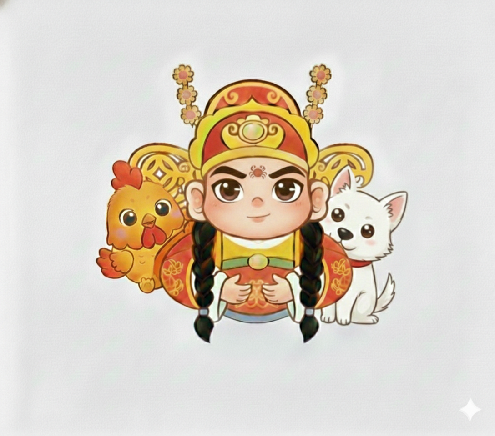

田 禾 宮
專業紫微命盤排版系統 (自動流年偵測版)
🔗 Local API URL:
🔑 API Key (選填):
* 系統會自動抓取當前系統時間作為「今年」，AI 分析內容維持最詳盡的大師級解析。
緣主資料錄入
姓名
出生年份 (國曆西元)
月份
1月
2月
3月
4月
5月
6月
7月
8月
9月
10月
11月
12月
日期
出生時辰
子 (23-01)
丑 (01-03)
寅 (03-05)
卯 (05-07)
辰 (07-09)
巳 (09-11)
午 (11-13)
未 (13-15)
申 (15-17)
酉 (17-19)
戌 (19-21)
亥 (21-23)
開啟天機・獲取個人專屬深度解析
✨ AI 天機神算深度詳解 (即時串流輸出)
點此生成 AI 專屬分析報告
🔮 正在啟動天機推演...
排盤完成後，點擊按鈕獲取由本地 AI 生成的詳盡深度解析。